Inova Prado
O 1º Hackathon de Inovação promovido de estudantes para estudantes da Região Metropolitana de Porto Alegre.
Inscreva-se aquiO que é o Inova Prado?
Uma maratona de inovação de 2 dias que reúne estudantes do ensino médio da região metropolitana de Porto Alegre para desenvolver soluções tecnológicas para problemas reais dos municípios — avaliadas por uma banca de especialistas, empreendedores e investidores.
Apenas quatro etapas para fazer a diferença.
Você faz em minutos.
Abertura do evento + Oficinas + Mentorias + Criação das Soluções.
Apresentação de Pitchs.
Cerimônia de Premiação.
Problemas da região. Soluções de jovens.
9 desafios reais organizados em 3 eixos temáticos. Um desafio por equipe. Uma premiação por eixo.
- D1 Integração e Governança de dados.
- D2 IA e Automação para Serviços.
- D3 Plataformas digitais para Comunidades.
Desafio personalizado da mais nova potência universitária do Brasil.
O Instituto de Tecnologia e Computação (ITEC), além de patrocinar o Inova Prado, está à procura de pessoas capazes de solucionar problemas.
- D1 Alfabetização na Idade Certa.
- D2 Integração da Comunidade Acadêmica (ITEC).
- D3 Logística Escolar e Automação Acadêmica.
Esses não são problemas de outro lugar. São problemas da nossa região.
Em 2024, mais de 580 mil pessoas foram deslocadas pelas enchentes no RS, mas não precisava ter sido assim.
- D1 Gestão e Coleta de Resíduos Sólidos.
- D2 Conservação e Revitalização de Espaços Públicos.
- D3 Sustentabilidade, Resiliência Climática e Meio Ambiente.
Mas, como participar do Inova Prado?
Premiar quem resolve.
- Kit de Premiação.
- Destaque nas Redes Sociais.
- Medalha.
- Certificado Especial.
- Vaga na Semana Caldeira do Instituto Caldeira
- Destaque nas Redes Sociais.
- Medalha e Certificado Especial.
- Kit de Premiação.
- Destaque nas Redes Sociais.
- Medalha.
- Certificado Especial.
Menções especiais certificadas
Dúvidas frequentes
O Inova Prado é uma jornada socioeducacional gratuita e sem fins lucrativos que tem o objetivo de despertar o interesse de jovens pelo mundo da inovação por meio de um hackathon, com desafios relacionados a três eixos: Tecnologia, Educação e Infraestrutura. Ao longo da jornada, os participantes desenvolvem competências como trabalho em equipe, disciplina e autonomia, fortalecendo seu protagonismo dentro e fora da sala de aula.
Sim! O Inova Prado é aberto a todos os estudantes de 14 a 18 anos, independente do nível de conhecimento técnico. Durante o evento oferecemos oficinas e mentorias para apoiar o desenvolvimento das soluções.
As inscrições são gratuitas, individuais e intransferíveis. Basta clicar no botão "Inscreva-se aqui" e preencher o formulário dentro do período de inscrições.
A Equipe por trás do Inova Prado

O Inova Prado é o primeiro evento público promovido pela Iniciativa Atrián. Criada em Agosto de 2025, pelos estudantes Bernardo Renner, Ísis Valentin, Joaquim Pereira, Renan Soares e Roberto Chamorro, a Atrián é uma Iniciativa Estudantil voltada ao desenvolvimento de projetos de impacto social através de soluções tecnológicas e marketing digital acessíveis para ONG's, negócios em ascensão e comunidades locais, além de, recentemente, proporcionar eventos que fomentam a inovação e o empreendedorismo juvenil, da região metropolitana de Porto Alegre.
Realização
Patrocinador

Parceria

Apoio


